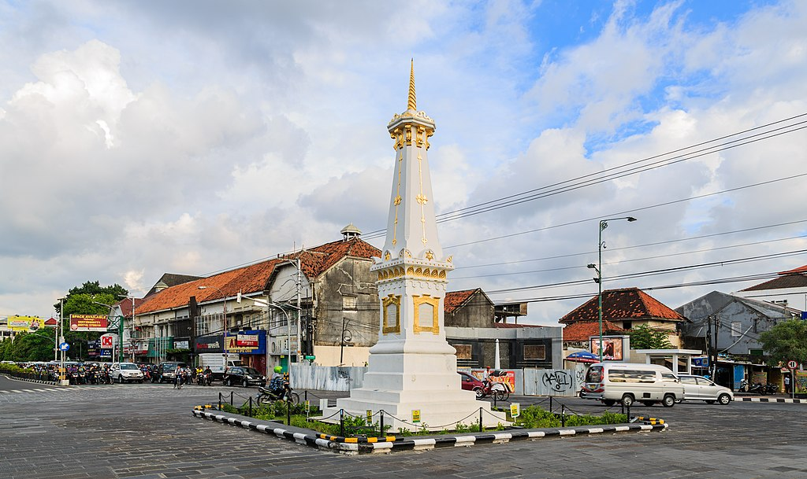

Sejarah

Kota Yogyakarta ꦔꦪꦺꦴꦒꦾꦏꦂꦠ, atau dikenal oleh masyarakat setempat dengan sebutan nama Yogya atau Jogja adalah ibu kota sekaligus pusat pemerintahan dan perekonomian dari provinsi Daerah Istimewa Yogyakarta, Indonesia. Kota ini adalah kota yang mempertahankan konsep tradisional dan budaya Jawa. Nama Yogyakarta berasal dari dua kata, yaitu Ayogya atau ang berarti "kedamaian" (atau tanpa perang, a "tidak", yogya merujuk pada yodya atau yudha, yang berarti "perang"), dan Karta yang berarti "baik". Ayodhya merupakan kota yang bersejarah di India di mana wiracarita Ramayana terjadi. Tapak Keraton Yogyakarta sendiri menuru babad (misalnya Babad Giyanti) dan leluri (riwayat oral) telah berupa sebuah dalem yang bernama Dalem Garjiwati; lalu dinamakan ulang oleh Susuhunan Pakubuwana || menjadi Dalem Ayogya.